-
Sushilicious - Restaurant Mapping
Javascript, Knockout.js, jQuery
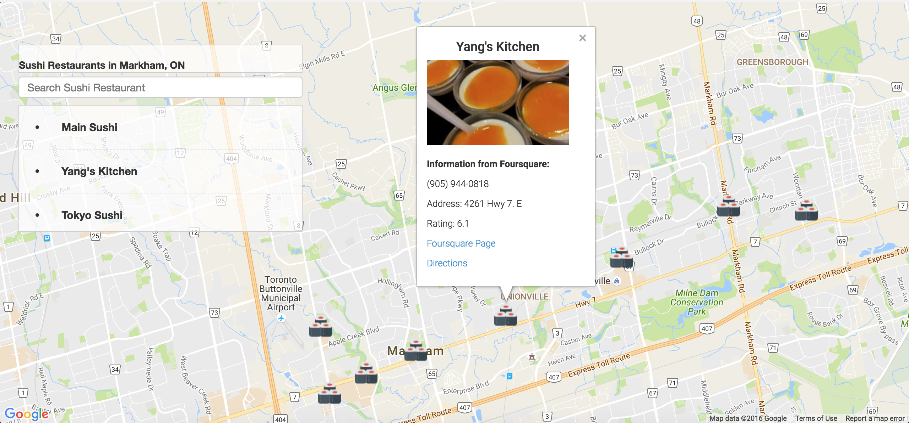
A single-page web application that displays a Google Map of an area. Users can search all included sushirestaurants and, when selected, additional information about it is presented from the FourSquare API.
-
Record Management System
Python
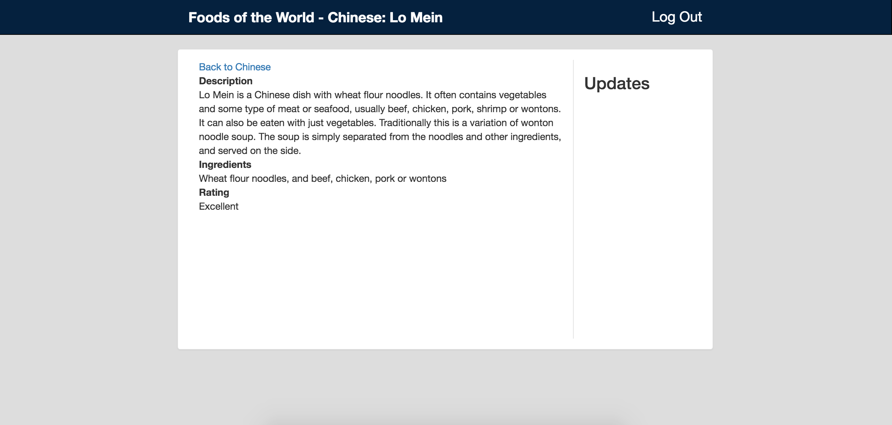
Developed a content management system using the Flask framework in Python. Authentication is provided via OAuth and all data is stored within PostgreSQL.
-
Tournament Results
Python

Built a PostgreSQL relational database scheme to store the results of a game tournament. Also provided a number of queries to efficiently report the results of the tournament and determine the winner.
-
Multi-User Blog
Python
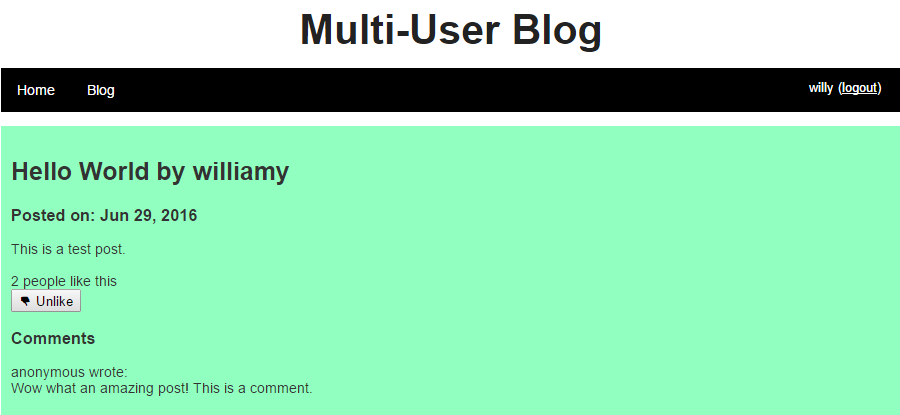
This is a project I built to allow multiple users to register and publish to a blog. It is built using a python backend and Jinja2 template. Users can sign up (using hashing and salting methods for security) through an authentication system I have built and publish posts.
-
Supervised Learning to Verify Suitability of Dysphonia Measurements for Diagnosis of Parkinson’s Disease
Python
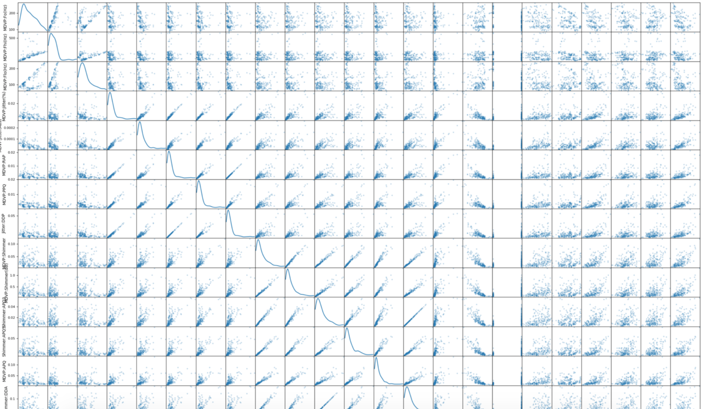
This project attempts to prove that vocalization data from a patient can help diagnose whether or not they suffer from Parkinson’s. I ran various machine learning classifiers (Ex. Naïve Bayes, SVM, etc.) on the data and concluded with an accuracy of 89.74%
-
Smartcab Reinforcement Learning
Python
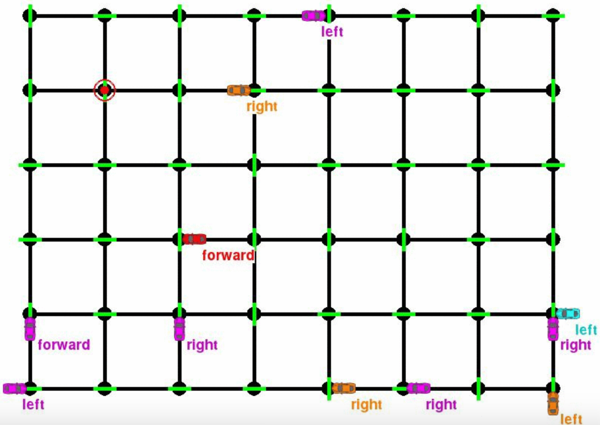
Applied reinforcement learning to build a simulated vehicle navigation agent. This project involved modeling a complex control problem in terms of limited available inputs, and designing a scheme to automatically learn an optimal driving strategy based on rewards and penalties.
-
Unsupervised Learning on Customers
Python
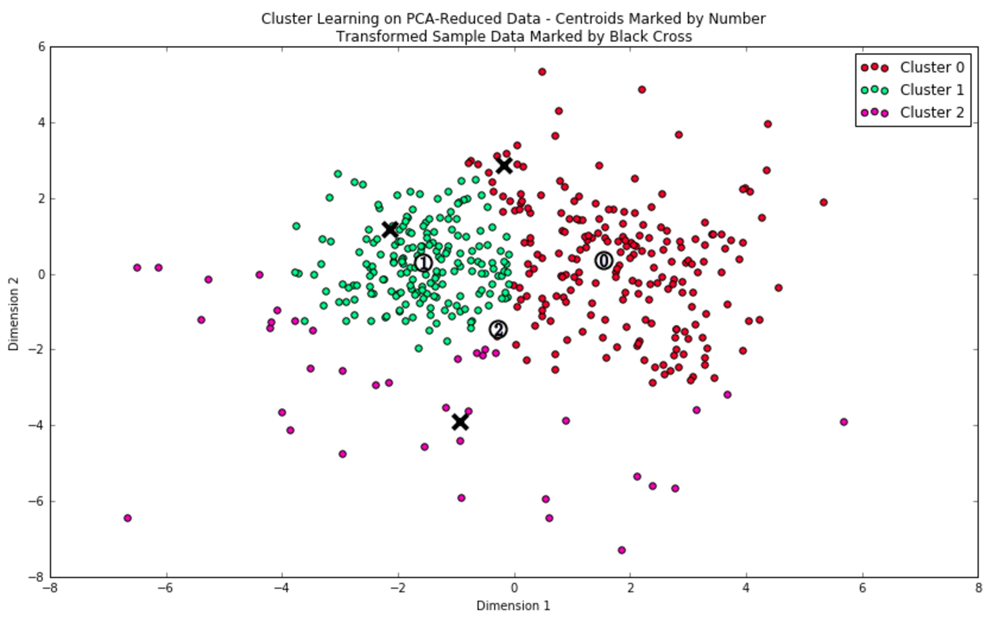
Reviewed unstructured data to understand the patterns and natural categories that the data fits into. Used multiple algorithms and both empirically and theoretically compared and contrasted their results. Made predictions about the natural categories of multiple types in a dataset, then checked these predictions against the result of unsupervised analysis.
-
Student Intervention Supervised Learning
Python
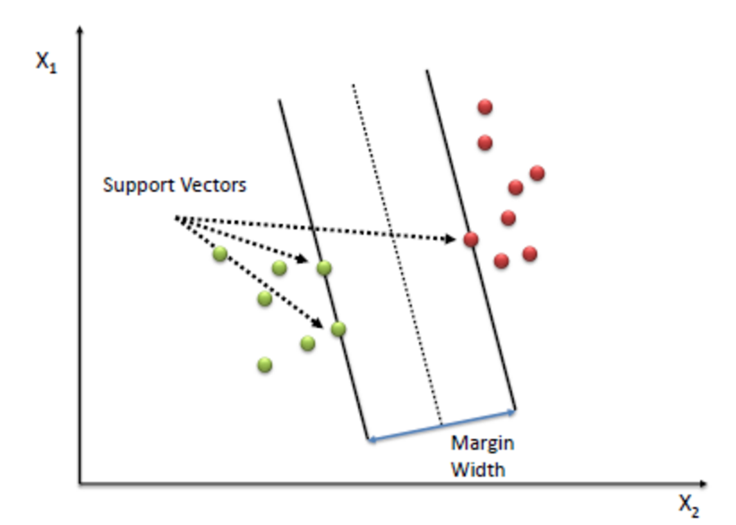
Investigated the factors that affect a student's performance in high school. Trained and tested several supervised machine learning models on a given dataset to predict how likely a student is to pass. Selected the best model based on relative accuracy and efficiency.
-
Boston House Pricing Prediction
Python
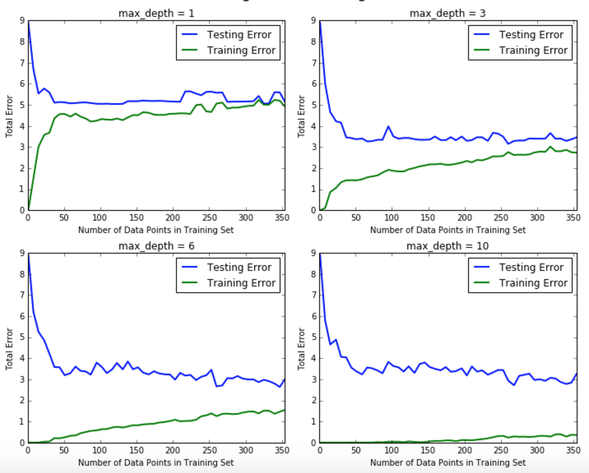
Built a model to predict the value of a given house in the Boston real estate market using various statistical analysis tools. Identified the best price that a client can sell their house utilizing machine learning.
-
Aug Tour
Yale Hacks 2015
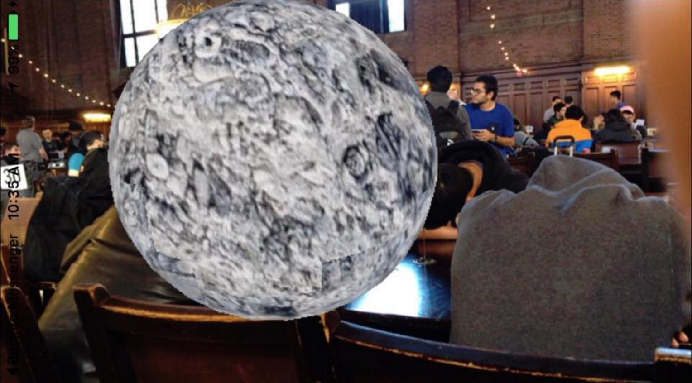
This application was made at YaleHacks 2015 and uses location services to detect if you are in proximity to one of the landmark features based on a predefined set of coordinates and project 3D objects
-
Boa Search Engine
Python
My culminating project from CS101 on Udacity was a fully functional search engine. I built a web crawler to find links on different pages and an index to find relevant URLs for a search word. The engine then ranks pages for the best result of a user query.
-
Personal Site 1.0
Old Version
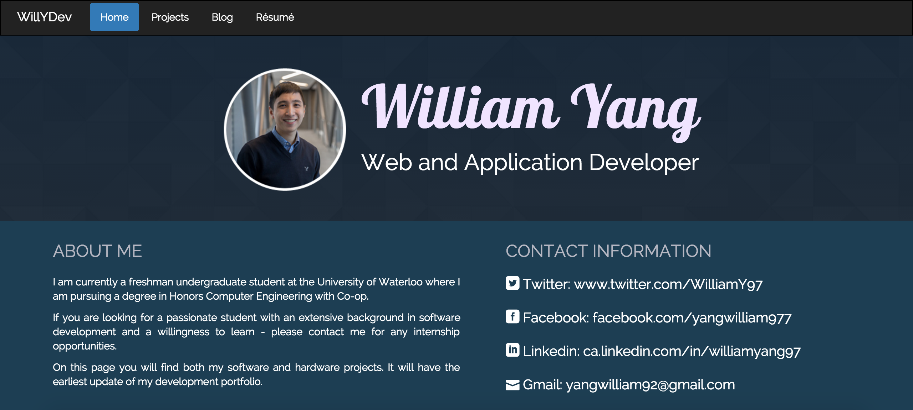
The personal site I used before I made the one currently. The entire source code for the old site is posted on my GitHub which you can visit from the link below!
-
Klondike Solitaire
Java
This is the classic Klondike Solitaire game that I have developed. It was my first application of object-oriented programming. I programmed a Solitaire applet that allows a player to move cards via mouse dragging. The GUI was designed using Java’s Abstract Window Toolkit
-
TeamHack
Hack The North 2015
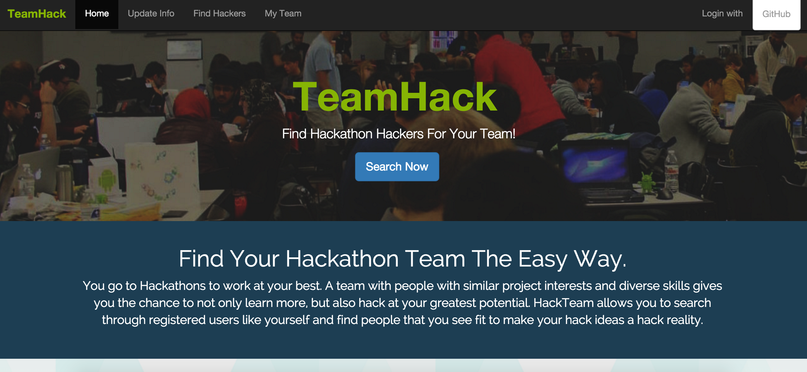
My project for Hack The North 2015 with three other members - TeamHack - Find and get matched with the best team members for your next big hackathon!
-
Waterloo Satellite Team Site
Software Team
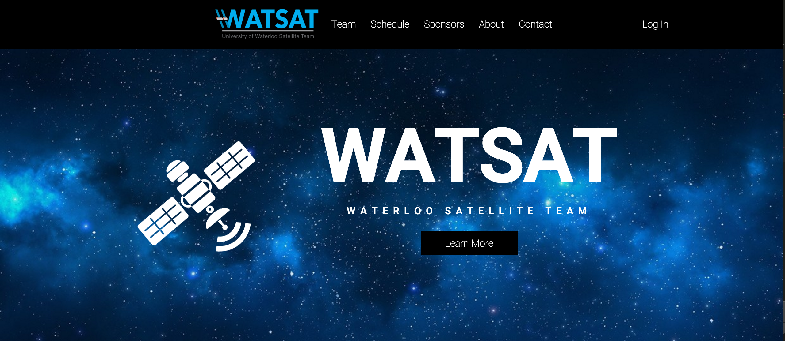
Revamping entire WatSat site. In progress. The University of Waterloo Satellite Team (WatSat) is a group of 30 passionate students serious about designing, building, and sending a satellite into space on a never-before-completed mission. Site is viewable at the link below
-
Texty
PennApps Winter 2016
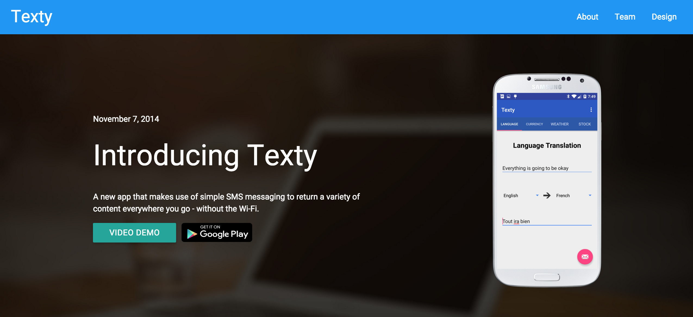
Texty's your non-data assistant who helps you with basic things while you don't have data. Instead of querying for information with an internet connection, it instead uses texts over a mobile device's cellular network which are cheaper than buying data packages.